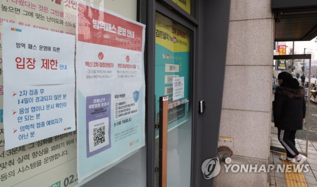

이에 따라 작년 12월 3일 보건복지부가 내린 특별방역대책 후속조치 중 학원 등과 독서실, 스터디카페를 방역패스 의무적용 시설로 포함한 부분은 행정소송 본안 1심 판결이 선고될 때까지 효력이 일시 정지된다. 학원 및 이와 유사하게 운영되는 교육시설·직업훈련기관 등이 대상으로, 여기에는 청소년들이 대학 진학을 위해 다니는 학원 외에도 성인을 대상으로 하는 취직·자격시험 학원까지 포함된다.
청소년 대상 방역패스는 3월 1일 시행되기 때문에 본안 소송 결과가 언제 나오는지에 따라 이번 결정이 의미를 갖게 되지만, 성인이 학원·스터디카페 등을 이용할 때 방역패스를 제시하도록 한 조치는 이날부터 효력을 상실한다. 재판부는 "(보건복지부의) 처분은 사실상 백신 미접종자 집단이 학원·독서실 등에 접근하고 이용할 권리를 제한하는 것"이라며 "미접종자 중 학원·독서실 등을 이용해 진학·취직·자격시험 등에 대비하려는 사람은 학습권이 제한돼 사실상 그들의 교육의 자유, 직업선택의 자유 등을 직접 침해한다"고 판단했다. 이어 "백신 미접종자라는 특정 집단의 국민에 대해서만 시설 이용을 제한하는 불리한 처우를 하려면 객관적이고 합리적 이유가 있어야 한다"며 "백신 접종자의 이른바 돌파 감염도 상당수 벌어지는 점 등에 비춰보면 시설 이용을 제한해야 할 정도로 백신 미접종자가 코로나19를 확산시킬 위험이 현저히 크다고 할 수는 없다"고 지적했다.